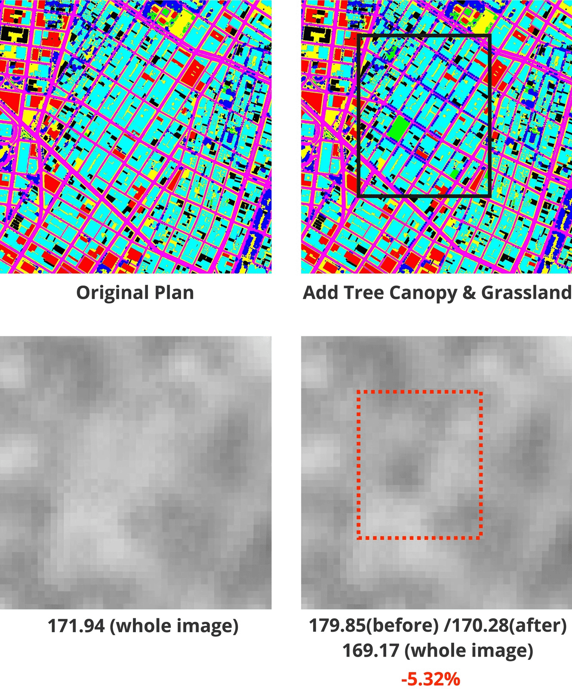
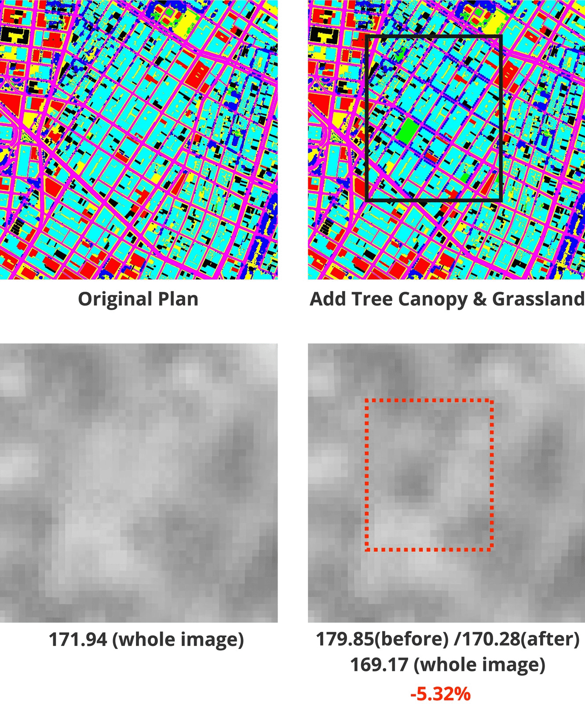
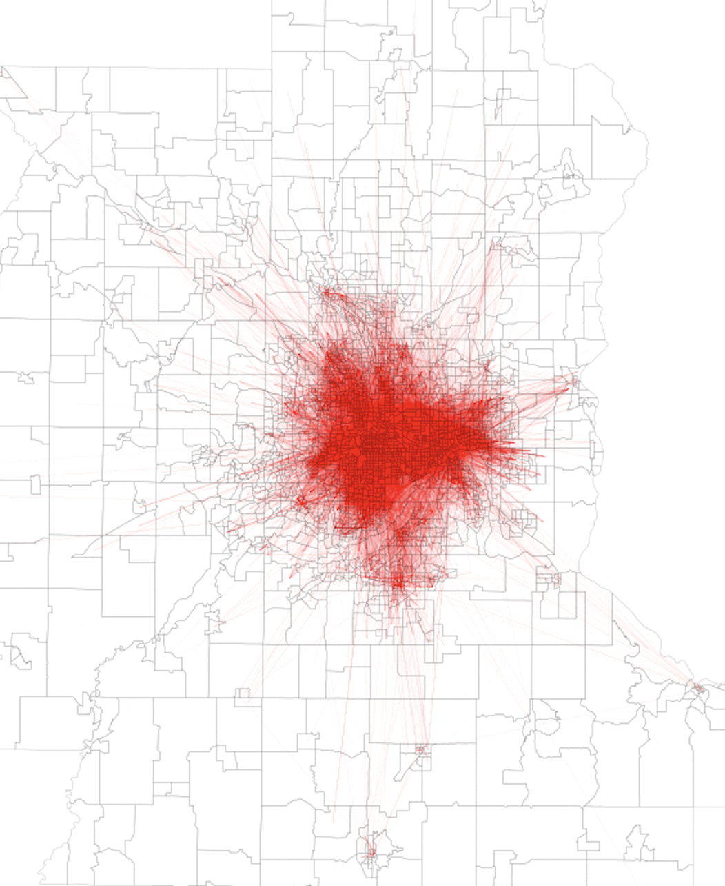
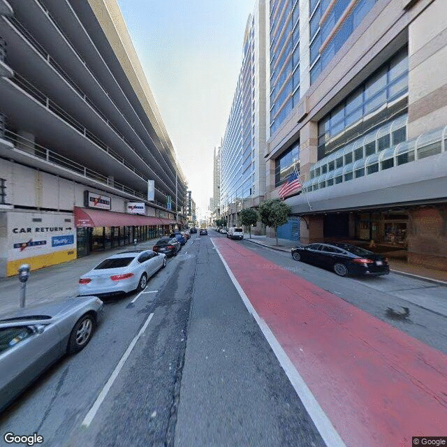
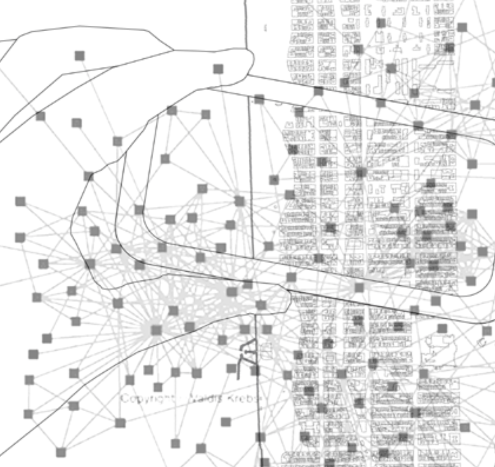
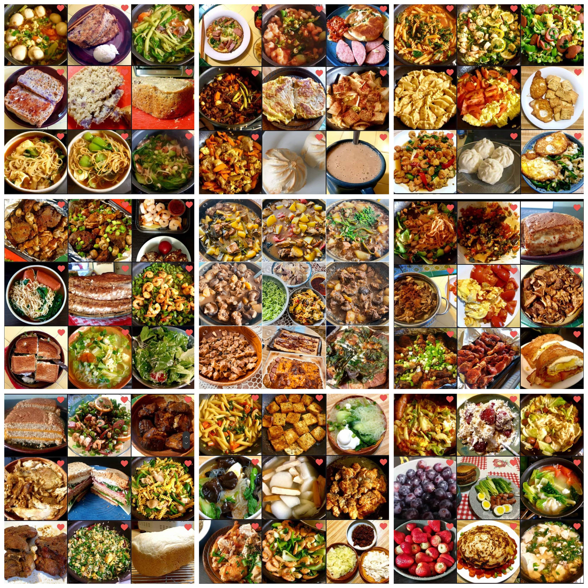
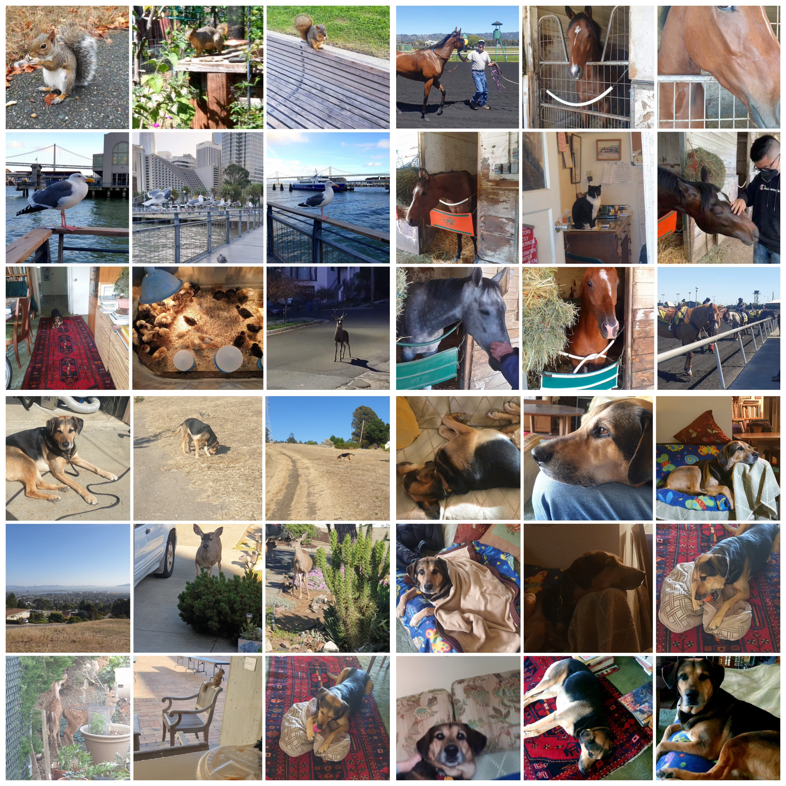
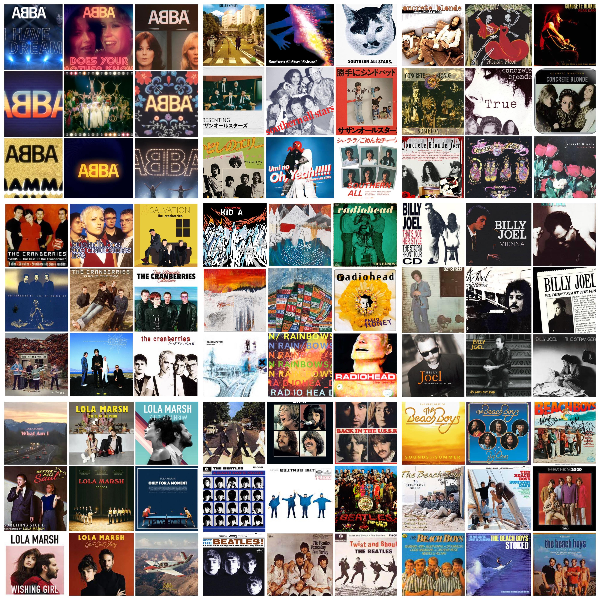
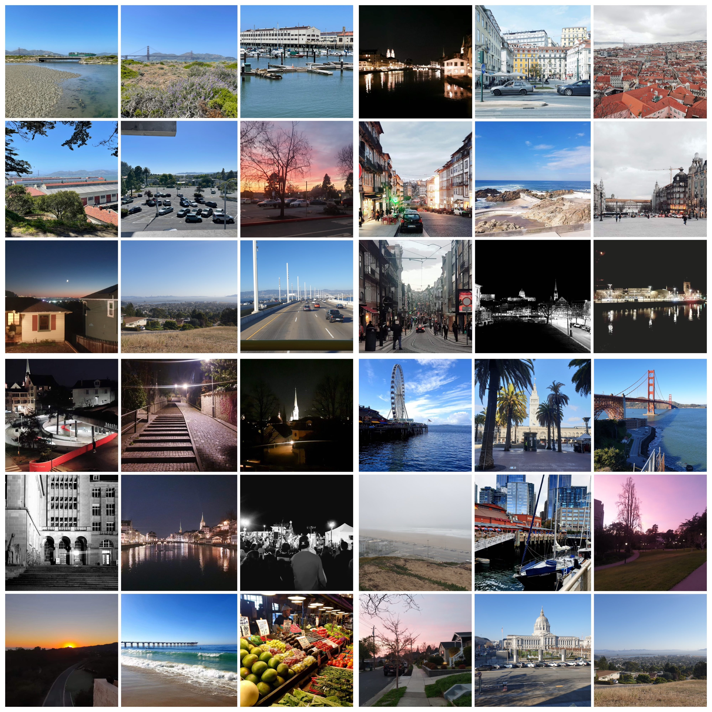

人工智能、城市形態和地表溫度。(鏈接)

我們使用生成對抗網絡（GAN）來預測紐約市地表溫度圖，輸入包括土地覆蓋和土地利用圖。環境設計師可以迅速獲得對他們提案的環境影響的精細預測和可視化。
李千川
研究者, 規劃者, 設計者.
健康 & 可持續城市; 城市感知 & 計算.
我在亞洲和美國接受教育，我的背景包括城市規劃和建築學，並著重應用數據科學。
我堅信，先進的計算思維和工具具有潛力增強我們的城市對抗氣候變化的韌性，提高整體宜居性以改善人類健康，並促進來自不同社經背景的個人的包容性。雖然我致力於鑽研導向的職業道路，但我同樣致力於在規劃和設計領域的努力中融入實踐要素。
即將
科學研究，牢固根植於城市感知和計算的複雜領域。旨在豐富政策格局，促進創建既可持續又有益的城市環境。我的方法論基於開發人工智能和網絡工具，以預測城市風險並為優化策略提供信息。
2023.07 - 今
網頁開發，旨在促進各種實時城市數據源的集成，包括多尺度空氣質量和基於位置的服務（LBS）數據，以建立專門針對舊金山灣區的綜合 '數字孿生'。
2022.08 - 2023.07
參與研究：發展和改進人工智能工具，尤其關注生成對抗網絡（GANs），以便協助將複雜的城市規劃轉化為高解析度的地表溫度映射。
2022.08 - 2023.07
在加州大學伯克利分校由LAEP/DCRP教授指導下主持兩項研究項目： 一個涉及使用主成分分析（PCA）和“5Ds”城市設計框架來對基於GPS的旅行數據進行分類的研究。 另一個則深入研究街道環境與犯罪事件之間的互動，並利用Google街景圖像（GSVI）結合機器學習算法進行調查。
2020.07 - 2021.01
參與眾多的環境規劃和景觀研究/設計項目，包括多個領域，如雨水管理、園林設計和公共空間設計。我還協助媒體和網站設計。
2020.07 - 2021.01
積極參與各種規劃和設計項目，涵蓋多樣的主題，如城市色彩規劃、海濱開發，甚至書籍編輯。與此同時，我還擔任了幾門長達一年的課程的助教，包括設計工作室、規劃理論和軟體應用等。
2021.08 - 2023.05
關鍵課程:
A+ - 可擴展的空間分析
A+ - 規劃師的分析和研究方法：地理信息系統 (GIS)
A - 後端網站架構
A - 地點媒體
A - 土地和房地產市場經濟學
A - 發展中國家的城市化
A- - 城市信息學與可視化
A- - 能源與環境高級研究
A- - 城市規劃過程中的公眾參與
2019.07 - 2019.08
透過理論閱讀、現場研究和深入案例分析，參與景觀生態學和環境規劃領域的研究。
2015.08 - 2021.06
關鍵課程:
A - 地理信息系統及其在城市規劃中的應用 I 和 II
A - 城市政策分析
A - 城市生態學與環境規劃
A - 物理環境分析
A - 城市規劃系統的數據分析
A - 社區規劃師實習
A - 外國景觀史
A - 高等數學
A - 線性代數
我的作品集涵蓋多個學科領域，包括空間數據分析、軟件開發、網絡地圖製作，以及建筑和媒體設計。

我們使用生成對抗網絡（GAN）來預測紐約市地表溫度圖，輸入包括土地覆蓋和土地利用圖。環境設計師可以迅速獲得對他們提案的環境影響的精細預測和可視化。
基於 '5Ds' 城市設計和交通導向發展框架，我們使用主成分分析（PCA）和 K-means 聚類分析來分析雙城地區基於 GPS 的出行數據。結論出四個出行集群，以為尋求從交通導向發展的角度更好理解流動模式的機構提供見解。


基於主動運輸 (AT) 框架，將 Google街景圖像 (GSVIs) 與其他城市數據整合，我們使用多變數回歸（MLR）和地理加權回歸（GWR），發現自行車停車設施、公共洗手間和天空暴露對城市犯罪有顯著影響。
我們正在開發一個開源的網站/數字孿生模型，整合多尺度的空氣質量數據和CDR數據，以支持可持續的環境規劃。該工具可以告知不同利益相關者不同社會群體對污染空氣的暴露情況。這是一系列關注多個城市和氣候變化的數字孿生模型的開始。

我們正在使用多來源的城市數據（尤其是社交媒體數據）、神經網絡和自然語言處理方法（例如，ChatGPT）來幫助不同的利益相關者（規劃師、投資者和其他公眾）更深入地理解城市功能和街道活動。


我們正在研究將社交媒體網絡整合到環境感測網絡中，以開發一個針對自然風險如洪水的警報系統。該系統應能夠基於機器學習算法提供實時更新和建議。
編程工具、視覺處理和建模軟件
生活本質上是充滿刺激，但充滿不確定性的。許多事情可以幫助我在生活和工作、浪漫和實際之間實現和諧的平衡，總是為我提供錨定。

我對各種美食都有深厚的情感，從精緻的煎炒到美味的烘焙食品，涵蓋了各種類型。對我來說，生活中最迷人的一個方面之一是能夠品味來自不同文化的食物，這促進了烹飪的探索和我們的健康。
我對動物有天生的感情。它們就像和我們人類一起度過時光的很棒的朋友。它們不僅能給我們帶來陪伴，而且對我們的心理健康也有很多好處。我們很幸運有這些出色的伴侶，它們為我們的生活帶來了積極性。


搖滾音樂完全是我的菜。當我工作時，它能幫助我保持動力。它為我帶來了一股能量和靈感的推動，幫助我完成任務並處理事情。就像在我的播放列表中擁有一個秘密武器，既能放鬆又能提高生產力!
我非常喜歡進行長途步行，並在停留時用相機捕捉時刻。這種悠閒但極具滿足感的體育活動不僅對我的心臟有益，還讓我有機會近距離觀察我們城市的細微之處。

我願意考慮各種學術或商業咨詢的機會！如果我的工作與您共鳴，請不要猶豫聯繫。讓我們一起為我們的城市創造更光明和更有前途的未來！
WhatsApp: (+1) 510-820-3295
Instgram: cql_9321
Facebook: cqlfb9321
cheerlee9321@gmail.com
liqianchuan9321@berkeley.edu
地球
太陽系，獵戶臂
銀河系
{kind=link}
{kind=link}
{kind=link}
{kind=link}
{kind=link}
{kind=link}
{kind=link}
{kind=link}
{kind=link}
{kind=link}
{kind=link}
{kind=link}
{kind=link}
{kind=link}
{kind=link}
{kind=link}
{kind=link}
{kind=link}
{kind=link}
{kind=link}
{kind=link}
{kind=link}
{kind=link}
{kind=link}